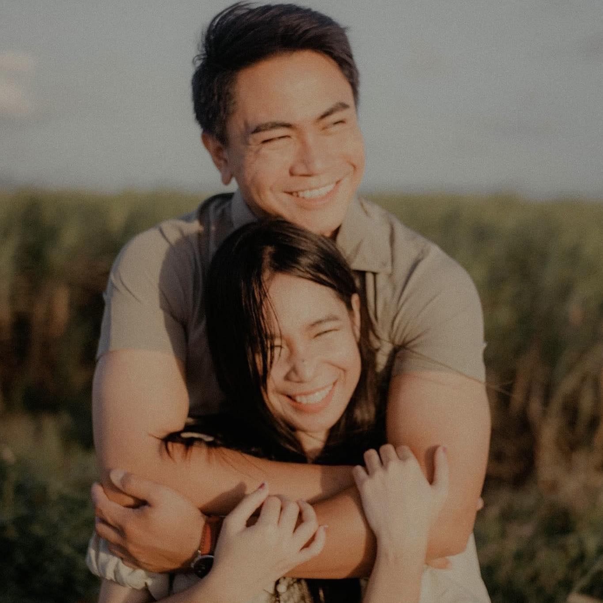

Intentional direction
We give clear guidance when needed, then step back so the moments still feel natural and unforced.
About S&D Photography
S&D Photography is built around the belief that the best images are never forced. We direct with intention, watch for the in-between moments, and craft galleries that feel polished without losing the emotion that made them worth capturing.
From weddings and engagements to portraits, family sessions, and event coverage, our approach stays the same: calm guidance, thoughtful composition, and imagery that still feels honest years later.



Our mission
We design every session to feel clear and easy from the first enquiry to final delivery. That means helping with locations, shaping timelines that protect the light, and giving enough direction for you to feel confident without making the experience feel staged.
Our editing style stays clean, warm, and timeless. We care about the emotional weight of an image just as much as the technical side, so the finished gallery feels cohesive, elevated, and personal to the people in it.

Our values
The work only feels premium when the experience does too. These principles guide how we photograph, communicate, and deliver.
We give clear guidance when needed, then step back so the moments still feel natural and unforced.
The small expressions, glances, and gestures matter as much as the big hero frames.
Clean colour, balanced contrast, and refined skin tones keep the work elegant long after trends move on.
We keep the experience organised and relaxed so you can stay present in front of the camera.
From fabric and florals to venue atmosphere and family interactions, the supporting frames complete the story.
Every gallery is curated to flow well, feel cohesive, and give you images that are easy to revisit and share.
Our process

We start with your vision, location ideas, timeline needs, and the atmosphere you want the photos to hold.

During the session we balance guided portraits with room for spontaneous interactions and genuine reactions.
We refine the final gallery so it feels polished, consistent, and ready to print, share, and revisit.
FAQ